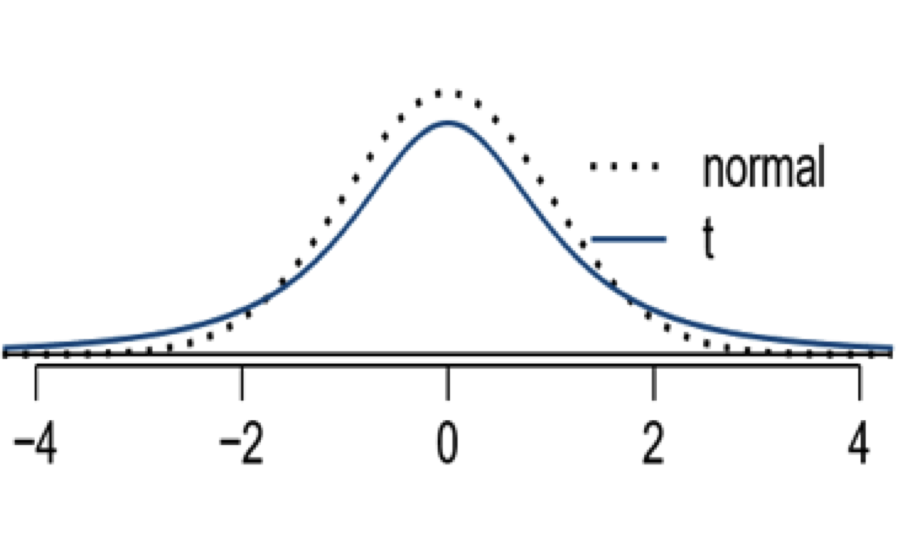
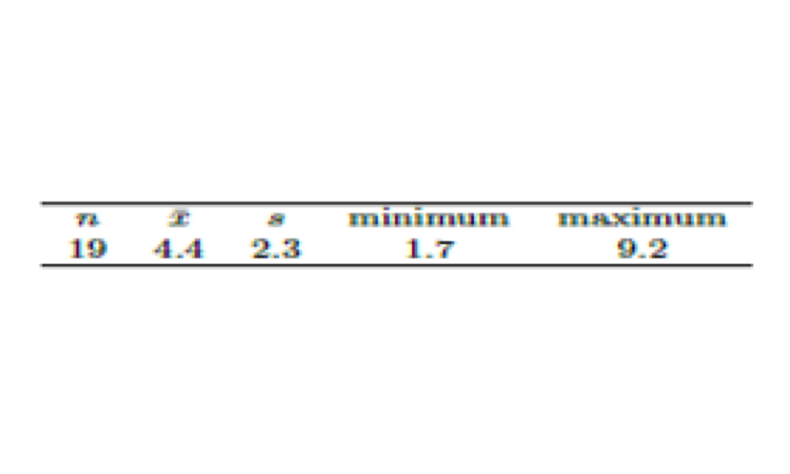

These notes use content from OpenIntro Statistics Slides by
Mine Cetinkaya-Rundel.
These notes use content from OpenIntro Statistics Slides by
Mine Cetinkaya-Rundel.
We discuss inference for the mean for numerical data in this chapter. The frame work and ideas are like that of chapter 5 (Inference for proportion), but we introduce and use a new t-distribution.
The sampling distribution for \(\bar{x}\)
t-distribution
Find probability under t-distribution (for P-value)
Find critical t-value for given probability of tail (for \(𝑡_{\frac{\alpha}{2}})\)
Confidence interval for population mean
One sample mean t-tests
Central Limit Theorem for the Sample Mean
For random samples of large size n (\(𝑛\ge 30\)) from a population with mean 𝜇 and standard deviation 𝜎, the sampling distribution of the sample mean \(\bar{x}\) approaches a normal distribution with the mean equal to the population mean 𝜇 and the standard deviation equal to the population standard deviation divided by the square root of the sample size: that is, \(\bar{x}\) is approximately \(𝑁(\mu, \frac{\sigma}{\sqrt{n}}).\)
For a population with normal distribution, no matter what sample size is, \(\bar{x} \sim 𝑁(\mu, \frac{\sigma}{\sqrt{n}})\)
Use a Webapp https://istats.shinyapps.io/sampdist_cont/
choose a (continuous) population – the graph on the right displays the probability distribution, the mean and standard deviation. Try
choose sample size 𝑛 and the number of simulations
Then click “Draw samples” (see next slide for the result)
The conditions for CLT to be true:
Use CLT (for inference about population mean):
Use \(\bar{x}\) as the point estimate for \(\mu\);
Construct the confidence interval in the similar way as we do in the proportion case: \(\bar{x} \pm 𝑧_{\frac{\alpha}{2}} \times 𝑆.𝐸.\) , where \(𝑆.𝐸.= \frac{\sigma}{\sqrt{n}} \approx \frac{s}{\sqrt{𝑛}}\) if 𝜎 is unknown;
For hypothesis testing, use the same framework and terms as in the case of proportion, use z test statistic
Example. . A GSS asked about “On the average day, how many hours do you watch TV?” A summary of surveyed result is below: \(\bar{x}\) = 2.94,\(s\)= 2.84,\(n\)=1555. Find a point estimate; the SE; and a 95% confidence interval.
Solution.
\(\color{purple}{\text{The point estimate of population mean is 2.94}}\)
\(\color{purple}{\text{The standard error is}}\hspace{0.2cm} se \approx \frac{\sigma}{\sqrt{𝑛}} = \frac{2.84}{\sqrt{1555}}=0.072\)
At 95% confidence level, \(𝑧_{0.025}=1.96,\)
The margin of error:
1.96(0.072)=0.14
\[\text{point estimate} \pm 𝑧_{\frac{\alpha}{2}}\times 𝑆.𝐸. \implies 2.94 \pm 1.96(0.07) \implies (2.8, 3.1) \ \ (\text{rounded to 1 decimal})\]
Interpretation:
We can be 95% confident that mean amount time of watching TV for Americans is between 2.8 and 3.1 hours a day. Or, out of 100 such similar intervals, 95 of them may contain the mean amount time of watching TV for Americans.
Why we need to use t-distribution.
The sampling distributions of sample means is nearly normal for any sample size if the population distribution is nearly normal. While this is helpful special case, it is usually difficult to verify normality.
When the standard deviation is unknown (almost always), and the sample size is small, the CLT cannot be applied. Or even when the size is large, we still have error if we use 𝑠 for 𝜎.
Introducing t-distribution
The t distribution is \(\color{blue}{\text{centered at 0}}\), it also has a bell shape (therefore symmetric, like the standard normal (𝑧) distribution), but \(\color{blue}{\text{its tails are thicker than that of the standard normal model}}\).
Extra thick tails are helpful for resolving our problem with a less reliable estimate the standard error (since n is small).

The t- distribution has an associated parameter: degrees of freedom, df, 𝒅f=𝒏−𝟏.
The smaller (larger) df, the thicker (thinner) the tails.
As \(df\) increases (i.e. n increases) , the t distribution approaches the standard normal distribution.
x = seq(-6, 6, length.out = 1000) plot(x, dnorm(x), type = "l", ylab = "Density") #standard normal lines(x, dt(x, df=1), col = "red", lty=2) #t(df=1) lines(x, dt(x, df=2), col = "blue", lty=3) #t(df=2) lines(x, dt(x, df=10), col = "orange", lty=5) #t(df=10)
The function pt( x, df) gives the probability to the left of 𝑥 under the t-distribution with degrees of freedom df.
The function pt( x, df, lower.tail = FALSE) gives the probability to the right of 𝑥 under the t-distribution with degrees of freedom df.
pt(-1.79,2)
pt(1.65, 18, lower.tail=FALSE)
Exercises: Find the probability of each of the following regions under the t-distribution.
With \(df\)=18, below −2.10
With \(df\)=20, above 1.65
With \(df\)=2, between −2 and 2
With \(df\)=29, between −2 and 2
pt(-2.10,18) pt(1.65, 20, lower.tail = FALSE) pt(2,2) - pt(-2,2) pt(2,29) - pt(-2,29)
To find the \(𝑡\) critical value in R, use the qt() function. The syntax is as follows: qt(p, df, lower.tail=TRUE) where:
p: The significance level (probability) to use
df: The degrees of freedom
lower.tail: If TRUE, the probability is to the left of the t-score to be returned. If FALSE, the probability to the right of the t-score to be returned. Default is TRUE.
qt(0.05, 11)
qt(0.05, 24, lower.tail = FALSE)
Example. (page 255) The mercury content from a sample of 19 Risso’s dolphins in Japan has the summary as the following:

Solution
\(SE = \frac{s}{\sqrt{n}}= \frac{2.3}{\sqrt{19}}= 0.527\)
for \(df\)= n-1=19-1 = 18, and 95% confidence level, \(t_{0.025}= 2.1009\)
qt(0.025,18,lower.tail = FALSE) qt(0.975,18)
\(M.E = t_{\frac{\alpha}{2}} \times S.E= 2.1009 \times 0.527 =1.1072\)
\(CI: \bar{x} \pm t_{\frac{\alpha}{2}} \times S.E = 4.4 \pm 2.1009 \times 0.527= (3.2928,5.5072)\)
Practice: Find 90% CI using sample with n=25, \(\bar{x}= 0.287, s=0.069\).
(Reminder: CI:\(\bar{x} \pm t_{\frac{\alpha}{2}} \times S.E\))
\(SE = \frac{s}{\sqrt{n}}= \frac{0.069}{\sqrt{25}}= 0.0138\)
For \(df= n-1=25-1 = 24\), and 90% confidence level, \(t_{0.05}= 1.71\)
qt(0.05,24, lower.tail = FALSE) qt(0.95,24)
\(M.E= t_{\frac{\alpha}{2}} \times S.E= 1.71 \times 0.0138\)
\(CI: \bar{x} \pm t_{\frac{\alpha}{2}} \times S.E = 0.287 \pm 1.71 \times 0.0138= (0.2634,0.3106)\)
Set up the null and alternative hypotheses. (Similar to that for proportion)
What are the hypotheses for testing for the mean of college student heights different from 66.5 inches?
\(H_0: \mu = 66.5\) \(H_a: \mu > 66.5\)
\(H_0: \mu = 66.5\) \(H_a: \mu < 66.5\)
\(H_0: \mu \ne 66.5\) \(H_a: \mu > 66.5\)
Example. A city health department wishes to determine if the mean bacteria count per unit volume of the water at a lake is within the safety level of 200. A researcher collected samples of waters with the counts: 175 190 205 193 184 207 204 193 196 180. Do the data strongly indicate that there is no concern? Test with 𝛼=0.05.
data= c(175, 190, 205, 193, 184, 207, 204, 193, 196 , 180) Mean=mean(data);Mean ;SD= sd(data);SD
Hypothesis \(H_0: \mu = 200\) versus \(H_a: \mu < 200 \hspace{0.2cm} {\color{green}{\text{(left sided)}}}\)
\(S.E =\frac{s}{\sqrt{n}}= \frac{10.81}{\sqrt{10}}=3.418\)
t-test statistic \(t= \frac{\text{sample mean - null value}}{S.E} = \frac{192.7-200}{3.418} = -2.14\)
The P-value is \(P(T < -2.14)= 0.031 <0.05\), with \(df\)= 10-1=9.
We have strong evidence to reject \(H_0\) and support \(H_a\). That is, the water of that lake is within safety level.
With \(\alpha\) =0.05, \(df\)=9, the critical t-value is \(t_{0.05}\)=1.833113
The rejection region is
\(R.R.=\{𝑇≤−𝑡_{0.05}\}=\{𝑇≤− 1.833\}\) (for left-sided}
Our t-test statistic is −2.14, is in the rejection region.
So we have the same decision: We have strong evidence to reject \(𝐻_0\) and support \(𝐻_𝑎\). That is, the water of that lake is within safety level.
Example. A researcher wants to determine if the water in lakes is non-acidic \((PH>6)\). The sample summary is: \(n\)=15,\(\bar{x}\)= 6.6, \(s\)=0.672. Test with \(\alpha\)=0.05
Solution. Sample data summary; \(n\)=15,\(\bar{x}= 6.6\), \(s\)=0.672
Hypothesis
\(H_0: \mu = 6\) \(H_a: \mu >6 \hspace{0.2cm} {\color{red}{\text{right sided}}}\)
\(S.E =\frac{s}{\sqrt{n}}= \frac{0.672}{\sqrt{15}}=0.1735\)
t-test statistic
\(t= \frac{\text{sample mean - null value}}{S.E} = \frac{6.6-6}{0.1735} = 3.458\)
The P-value is
\(P(T > 3.458)= 0.00192 < 0.05\), with \(df\)= 15-1=14.
We have strong evidence to reject \(H_0\) and support \(H_a\). That is, the water of that lake is non-acidic.
With \(\alpha\)=0.05, \(df\)=14, the critical t-value is \(t_{0.05}\)=1.7613
The rejection region is
\(R.R.=\{𝑇\ge 𝑡_{0.05}\}=\{𝑇\ge 1.7613\}\) (for right-sided}
Our t-test statistic is 3.458, is in the rejection region.
So we have the same decision: We have strong evidence to reject \(𝐻_0\) and support \(𝐻_𝑎\). That is, the water in the lakes is non-acidic(PH>6).
Example. Test the claim “ The Cherry Blossom 10 mile race running time average was 93.29 minutes in 2006. Is the typical US runner getting faster or slower over time since then? Use a sample in 2017 with \(n\)=100,\(\bar{x}\)=97.32, \(s\)=16.98,find the t-test statistic, p-value and make decision.
Solution.
Hypothesis
\(H_0: \mu = 93.29\) \(H_a: \ne 93.29 \hspace{0.2cm} {\color{purple}{\text{two sided}}}\)
\(S.E =\frac{s}{\sqrt{n}}= \frac{16.98}{\sqrt{100}}=1.698\)
t-test statistic
\(t= \frac{\text{sample mean - null value}}{S.E} = \frac{97.32-93.29}{1.698} = 2.3734\)
The P-value is
\(P(|t| >2.3734)= 2*P(t<-2.3734)= 2*P(t>2.3734)=2*0.0098=0.0196 <0.05\), with \(df\)= 100-1=99.
Because the P-value is smaller than 0.05, we reject \(𝐻_0\) and support \(𝐻_𝑎\). That is, the data provides strong evidence that the average running time in 2017 is different from the 2006 average
With \(\alpha=\frac{0.05}{2}\) =0.025, \(df\)=99, the critical t-value is \(t_{\frac{0.05}{2}}= t_{0.025}\)=1.984
The rejection region (for two-sided} is
\(R.R.=\{|𝑇| \ge −𝑡_{0.025}\}=\{|𝑇|≤ -1.984 \hspace{0.2cm} or \hspace{0.2cm}𝑇\ge 1.984\}\)
Our t-test statistic is 2.3734, is in the rejection region, so we have the same decision: We have strong evidence to reject \(𝐻_0\) and support \(𝐻_𝑎\). That is, the data provides strong evidence that the average running time in 2017 is different from the 2006 average.
Note: Rejection region depends on the significance level and the degree of freedom, the smaller n allows larger R.R.
Compare \(t_{0.025}=1.984\), (\(df\)=99), with \(z_{0.025}\)=1.96.
Compare \(t_{0.05}\)=1.833 (\(df\)=9) ,\(t_{0.05}\)=1.761, (\(df\)=14), with \(z_{0.05}=1.645\).
Similar to the normal distribution case, we can use 100(1−𝛼)% confidence interval to conduct two-sided hypothesis test using t-distribution and significance level 𝛼.
The confidence interval is the “acceptance region”, the complement of the rejection region, so
If the null value is in the CI, then we cannot reject \(𝐻_0\) to substantiate \(𝐻_𝑎;\)
If the null value is NOT in the CI, then we have evidence to reject \(𝐻_0\) to substantiate \(𝐻_𝑎\)
For the previous example, for two-sided hypothesis testing
Hypotheses
\(𝐻_0: \mu = 93.29, 𝐻_𝑎: \mu \ne 93.29\)
\(n\)=100, \(\bar{x}=97.32\), \(s\)=16.98, \(\mu_0=93.29\) (null value)
\(S.E = 1.698\), \(t_{0.025}\)=1.984 (with \(df\)=99) (for \(\alpha\)=0.05).
\(\text{The 95% CI is}\hspace{0.2cm} 97.32 \pm 1.984 \times 1.698= (93.95117, 100.6888)\).
\(\mu_0=93.29\) is not in the CI, so we reject \(𝐻_0\) to substantiate \(𝐻_𝑎\).
We can also construct CI using the null value as the center, then check the if the observed statistic is in the CI (not reject \(𝐻_0\)) or not (reject \(𝐻_0\))
For One-sided test, we can do the same, but we must be very careful with the confidence level and significance level, and the direction of interval.
We do not recommend using CI for one-sided tests.
When 𝜎 is unknown, we use t-distribution to compensate the error caused by using \(“s”\) for \(“\sigma”\), even the sample size is large.
Example. For 95% confidence level, or significance level \(\alpha\)=0.025 \(z_{0.025}=1.959964\)
\(t_{0.025}=2.059539 \hspace{0.2cm} \text{with df}=25\)
\(𝑡_{0.025}=1.961492 \hspace{0.2cm} \text{with df}=1554\)
\(𝑡_{0.025}=1.960893 \hspace{0.2cm} \text{with df}=2554\)
Example. If the test statistic is 2, for right-sided \(𝐻_𝑎\)
P-value = \(𝑃(𝑍>2)=0.02275013\)
for \(df\)=25, \(P-value = 𝑃(𝑡>2)=0.02823799\)
for \(df\)=2554, \(P-value = 𝑃(𝑡>2)=0.02280299\)
Because t-distribution has thicker tails, and as \(n\) gets larger, the difference is getting smaller.
If \(\sigma\) is unknown, use 𝑡-distribution with \(S.E =\frac{s}{\sqrt{n}}\)
Conditions:
Point Estimate: \(\bar{x}\)
Confidence Interval: \(\bar{x} \pm 𝑡_\frac{\alpha}{2}×𝑆.𝐸\), \((\color{blue}{𝑡_\frac{\alpha}{2}}\) depends on \(df\)=𝑛−1).
Hypothesis testing: \(T = \frac{\text{sample mean- null value}}{S.E.}\)
P-value depends on \(df\)=𝑛−1.